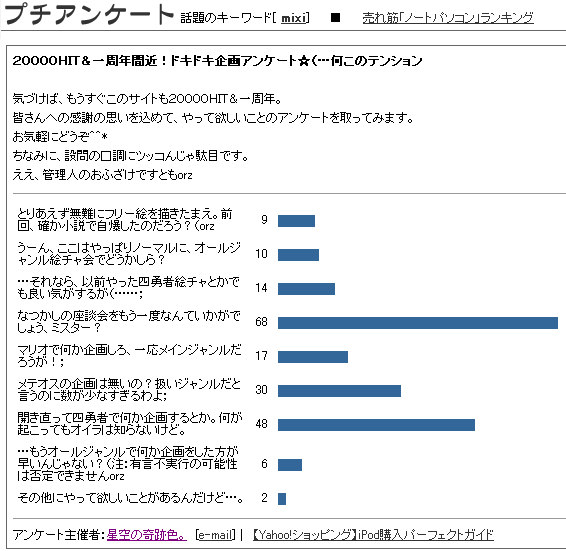

クリスケ
「あいたたた…；里音ってば、いくら管理人だからってこんな乱暴なっ…。
……えー、っと。なんでも、擬人化＆加筆修正が終わらないうちにサイト一周年迎えちゃったから、
オイラたち四勇者メンバーは何だか別ページで座談会やるみたい。
えっと…メンバーは、（里音から送りつけられてきた紙に目を落とす）
オイラと、カーレッジと、キノールとクリース…かな？」
カーレッジ
「やれやれ…擬人化修正を始めたと思ったら、いきなりこんな形か」
キノール
「うん、僕とクリースもまだ出番までありそうだし…。
あ、そうだった。ええと…こっちのページでは、『四人の勇者の物語』のステージ２までのネタバレ発言が普通に出てくるから、
途中までしか読んでないって人は気をつけてね」
クリース
「…念のために、里音から擬人化修正の済んでいない四勇者を預かってきたけれど…。
繋げてしまっても良いかな？」
カーレッジ
「ああ、頼む。…これだな？」
（↓擬人化修正も加筆修正も現段階ではまだ終わってません）
プロローグ
２
四勇者ステージ１
１ ２ ３
ステージ２
１ ２ ３ ４ ５ ６
クリスケ
「オイラたちがどんな事やってたのか忘れちゃって話に乗れない、って時はちょっと見返してみると良いかも。
…にしても……本当に里音って計画性が無いんだからー；」
キノール
「…二人も怒ってたね」
クリース
「ああ…そうか、まだ彼らの名前は出せないんだね。
…勇者ノコノコ、と言えば大丈夫かな？彼の怒り具合と来たら（苦笑）」
クリスケ
「あー……；次のステージはやっとオレの出番だ！って張り切ってた所にコレだもんね。
テレ…勇者テレサ、の方はまだ呆れてるだけみたいだったけど」
カーレッジ
「あれは呆れている内心で絶対に怒っていると思うのだが…；」
クリスケ
「あ、あははは…；それじゃあ、里音の文句ばっかり言っててもお客さんが退屈しちゃうだろうから、
企画の説明、そろそろ始めちゃおうか？」
キノール
「僕も賛成。ええっと…一応、里音からアンケート票数の紙を貰ってきたんだけど。
こんな感じに落ち着いたみたい」

カーレッジ
「……登場キャラの９割がオリキャラ、という小説で良くここまで票が稼げたな…；」
クリスケ
「…カーレッジ、本音出てるよ…（小声。）
でも、ここまで上位に食い込むなんて思ってなかったからオイラも驚いてる。
…２００００ＨＩＴの時も一応２位だったけど、それからも順位キープしてるし、票数も倍くらいに増えてるし」
クリース
「ここに勇者ノコノコがいたら、オレのおかげだ！と言って喜んでいそうだけれど（笑）」
クリスケ
「それで絶対勇者テレサに釘刺されてそうだよね（笑。
えーと、でもって…アンケートでも２位になったから、オイラ達、四勇者で企画もやるみたい。
キノール、里音から何か聞いてる？」
キノール
「ううん、僕は何も…あ、待って。さっきの封筒の中にまだ紙が入ってるみたい。
えーっと…何々…？」
カーレッジ
（横から覗き込む）「…ああ、また四勇者絵チャットをやるのか？隅に小さく書いてあるな」
キノール
「これは、二日間に分けてオールジャンルと四勇者と、で区別してやるみたい。
えーと、だから僕たちのやる事とは別物…あった、この紙だよ」
クリスケ
「じゃあ、オイラが読み上げるね。
えー……と…。
"先着５名"」
カーレッジ
「……何がだ？；」
クリース
「……また何か募集ごとでもやるのかい？；」
クリスケ
「ちょ、ちょっと待って。まだ続きがあるから…何このメモ書き、人に読ませるならちゃんと清書しておいて欲しいなー…。
里音の字って汚いから……えと、"リクエスト募集、イラスト、擬人化でも原型でもＯＫ"って書き殴ってあるよ」
キノール
「あ、ってことはイラストのリクエストを先着５名受け付ける、って事かな？
……ちょっと待って。
里音がそんな生易しい企画を持ち出すはず…」
クリスケ
「待って、オイラもそう思う…あ、このメモかな。
えーっと…。
"注、単なるリクエストではなく、無法地帯状態リクエストも可とする。"
………。
……………え？；」
カーレッジ
「…無法地帯？；（嫌な予感に冷や汗）」
クリスケ
「"もちろん普通のイラストリクでも可能ですが、
……よっぽど行き過ぎてない限り、どんなおふざけリクエストでも受け付けます。
女装可、コスプレ可、パロディ可、性別逆転可、
どんな場面設定でも可、リクエスト主のオリキャラ、もしくは好きなキャラとのコラボレーション可。
裏行きになってしまいそうなリクエストでも可。（ＢＬ可能。
どうぞ欲望の赴くままに。"
……って書いてある」
一同
「「………………」」
クリスケ
「……カ、カーレッジ、お願いだからこの紙にスターシューティングぶっ放して！！
クリースも聖水銃やっちゃって、お願い！！」
ずどーんばきーんばっしゃーん。
キノール
「…シワ一つ寄ってないよ……」
一同
「「（ 本 気 だ ……… ！ ！ ！ ）」」
クリスケ
「ちょ、え、どうするのコレ！？オイラ達また遊ばれるの！？
逃げた方が良いかな、というか……こ、ここ、一応表なんだよね！？
うわあぁ、最近里音寝不足続きでテンションが狂ってるからこんな企画考えちゃってるんだよ、
むしろこの紙より里音をどうにかしに行った方が早いんじゃ……！」
カーレッジ
「……クリスケ、多分ここまで来たらあの星詩を止められる奴はいないぞ。
自分が犠牲者にならない事を祈るしかない」
クリスケ
「うーわーあーーっ！；；
ぜ、絶対に里音、今頃オイラ達の反応予想して笑ってるよ…！」
クリース
「…ＰＣ前のお客さんも、苦笑いかため息か噴出すかのどれかをやっているんじゃないかな？」
キノール
「同感……」
クリスケ
「…これ、決定？決定なの？」
（カーレッジ、無言でぽんとクリスケの肩に手を置く）
（注：カーレッジはもう原版時代から色々といじめられまくってきたので何かを悟ってます）
（ずごーんと更に落ち込むクリスケ）
カーレッジ
「…とりあえず、後で沈める」
クリスケ
「あー……ずるいよ、勇者ノコノコとテレサはこういう危険性無いなんて…」
キノール
「……あ、ごめんね、クリスケ、たった今僕もう一枚メモ用紙見つけちゃった…」
クリスケ
「…え？」
キノール
「"メールでの募集となるので、
サイト版四勇者にはまだ出ていない原版に出ていたキャラをリクエストする事も可能。
かっこ、もちろんそいつらにも無法地帯なリクエストをする事が可能です"
…だって」
（どこからか二人分の悲鳴が響く。）
カーレッジ
「………」
クリスケ
「なんか、もう開き直ってきたかも、オイラ…；」
クリース
「……幸運を祈るしかないみたいだね。
ええと…このままではアンケートの解説だけで終わってしまうから、今後の四勇者のことでも…」
カーレッジ
「（後で話題を変えてくれて助かったと礼を言いに行かなくては…；）
そうだな、…今は擬人化＆加筆修正の最中のようだが…」
クリスケ
「あー…何だか、擬人化修正よりも加筆修正に時間がかかってるみたいだよ。
…一年も前に書いた小説が読めないのは分かったけど、もうちょっと気軽にやれば良いのにねぇ…」
カーレッジ
「価値観も少しずつ変わっていく頃だしな…。
とにかく、これで後は無事に事が進む事を祈るしかない」
キノール
「夏中には、ステージ４に入っていて欲しいねえ」
クリスケ
「ステージ３で勇者が揃うから、そこまで行けばもう少しにぎやかになるだろうし。
あ…そうそう、ステージ４は現版で言うステージ５なんだけど、
ちょっと色々内容が変わるかもって里音が言ってた。でも、目的は同じだって」
カーレッジ
「有言不実行にならなければ良いが……。
星詩もそろそろ高校が忙しくなり始めるだろうから、ある意味星詩も戦いだな」
クリスケ
「うん、オイラ達も毎回毎回大変だけどね；」
クリスケ
「えー…と、もうこれで議題は無いかな？」
クリース
「ああ、元々私たちは企画の説明をする為に呼ばれたようなものだし…。
次は四勇者の本編で会おう。…多分、ステージ２になら加筆修正にもあまり時間がかからないだろうし」
キノール
「僕のステージがちょっと大変そうかも…；でも、きっとすぐにまた会えるよ」
カーレッジ
「私は…次回にはもうとりあえず出られるのか。
とにかく、早く勇者全員が揃うと良いんだが」
クリスケ
「オイラも（擬人化版では）吹っ飛ばされた所で終わっちゃってるし…。
この企画もだけど、里音には小説の方も頑張ってもらわないとね」
キノール
「じゃあ、そろそろ…」
一同
「「ここまで読んでくださって、ありがとうございましたー！」」
クリスケ
「…あれ？カーレッジ、帰らないの？」
カーレッジ
「ああ、里音に一発スターシューティングをしてこようかと思って」
クリスケ
「…一緒に行っても良い？」
カーレッジ
「ああ、…いっそ全員で行くか」
その後、マリオ・メテオスでの座談会で沈められたままの里音に、
さらなる攻撃（４＋２人分）が加えられたとか、何とか。
沈没した星詩里音は、それでも後悔の表情は浮べていなかったとさ。
…どうぞ皆さん、悪ノリして遊んであげて下さい。
"Hoshizora no kisekiiro . " Miracle color of starry sky "
First Anniversary
THANK You THANK You Very Much !!
２００６．７．２２
星詩里音